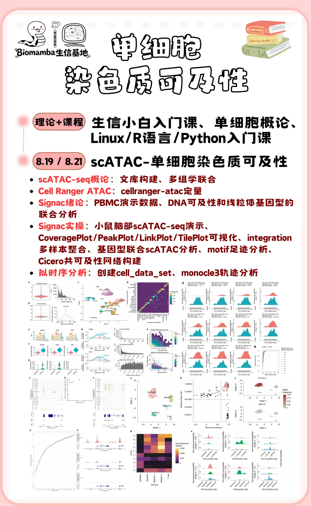

周三直播教学：单细胞染色质可及性
原文：https://mp.weixin.qq.com/s?__biz=MzAwMzIzOTk5OQ==&mid=2247541071&idx=2&sn=211c95ecf8e7f28418eb0938c8e32695&chksm=9b3c581fac4bd109852ef61fef0fb952ea8570790bc40cb7e03a0b0cdeeb8572332a1f335ef6#rd 合集：生信基地
进来学习单细胞染色质可及性课程。传统的scRNA-seq能解析基因表达，但看不到染色质活动和调控过程。scATAC-seq能帮我们理解基因调控的"开关"机制，哪些DNA区域对转录因子开放，如何影响基因表达。本次直播将系统讲解scATAC-seq技术原理，从表观层面深入理解细胞调控网络。下面是直播通道，大家周三上午九点来看直播哦~，这次直播我们不公开回放，且看且珍惜~
直播回放+实操欢迎联系我们客服[Biomamba_zhushou]

单细胞染色质可及性课程详情

 我们根据学员的学习需求，分专题精准授课。全新开设单细胞染色质可及性分析专题，手把手实操教学，带你系统掌握scATAC-seq概论、Cell Ranger ATAC、Signac绪论与实操、拟时序分析等核心内容。8.19、8.21两天，在生信基地（线上/线下均可参与）开课啦~助力大家实现按需定向学习，高效交流答疑，快速吃透单细胞ATAC-seq分析！
我们根据学员的学习需求，分专题精准授课。全新开设单细胞染色质可及性分析专题，手把手实操教学，带你系统掌握scATAC-seq概论、Cell Ranger ATAC、Signac绪论与实操、拟时序分析等核心内容。8.19、8.21两天，在生信基地（线上/线下均可参与）开课啦~助力大家实现按需定向学习，高效交流答疑，快速吃透单细胞ATAC-seq分析！

教单细胞，我们是专业的！Biomamba的单细胞教程播放量已经50w+。小伙伴们的发文致谢可见：致谢合辑。https://www.bilibili.com/video/BV1S44y1b76Z/
基于目前的科研环境，只靠单一组学很难能做出创新性，当下高分期刊的研究，基本都在走向多组学整合。由于缺少编程、单细胞、文章套路等基本知识，大家自学并不能完全自学掌握单细胞分析技能。因此，我们推出了全新的《单细胞多组学课程》。视频回放+答疑+循环开课，带大家吃透单细胞多组学的学习。但根据不同用户的需求我们分专题进行授课，因此，《单细胞染色质可及性分析专题》上线，希望真的能够做到“手把手”的带大家完成单细胞染色质可及性分析的学习。当然，我们拒绝生信快餐，课后欢迎大家随时在群里对课程内容提问~报名即可获得：1、专属服务三年内课程指导、答疑、回放、直播复听。2、专属学习群加入《单细胞染色质可及性》专属群聊，与同期学员共同交流、互助进步。3、专属服务器开箱即用的单细胞分析镜像（我们已经布置好的单细胞染色质可及性分析环境），256GB内存、500GB硬盘、20线程服务器3个月使用权。
4、开课前附赠学习资料
·《单细胞概论》、《生信小白入门课》理论知识回放；《R语言入门》、《Linux入门》、《Python入门》编程语言课程回放及配套资料；
·《SeekGene多组学全家桶》及《单细胞甲基化》课程回放和配套资料；
· 单细胞染色质可及性分析手册，配套代码与测试文件（~57GB、22369个文件）
教程部分图片集锦：

报名联系客服微信[ Biomamba_zhushou]：

学习资料一览
通过这次全程学习，你将获得并掌握以下学习手册与资料：
首先是生信人必备的理论课程和三个编程课程以及配套资料：
生信小白入门课(4h视频回放)12w播放量，生信小白必看的Linux教程R语言入门课回放来啦~8小时掌握生信Python
以及以下实战专题：
scATAC-单细胞染色质可及性

同我们以前的课程一样，我们给大家准备了学习手册和学习资料，大家可联系滴滴助手[Biomamba_zhushou]领取：
教程图片集锦：

单细胞染色质可及性学习手册

单细胞染色质可及性教程目录： 一、准备工作二、scATAC-seq 1. 染色质可及性2. scATAC-seq文库构建3. scATAC-seq的多组学联合4. scATAC-seq分析三、Cell Ranger ATAC1. 软件下载与安装2. 获得测试数据3. cellranger-atac定量四、Signac绪论1. PBMC演示数据2. 评估scATAC中的降维方法3. DNA 可及性和线粒体基因型的联合分析4. scATAC分析的扩展5. 讨论五、Signac实操1. signac基本流程2. 与scRNA的联合分析3. 常见可视化4. 多样本分析5. 基因型联合scATAC分析6. motif分析7. 共可及性网络构建六、拟时序分析1. 创建cell_data_set2. 拟时序分析七、版本信息八、单细胞教程全收录九、欢迎致谢 测试文件，总大小56.65GB
测试文件，总大小56.65GB
赠送课程：SeekGene多组学全家桶
同我们以前的课程一样，我们给大家准备了学习手册和学习资料，大家可滴滴助手[Biomamba_zhushou]领取：
回放已上线！12h掌握SeekGene单细胞/空间多组学分析，涵盖scFAST、scATAC、SeekSpace全流程实战
报名费用
满满的课程只要￥1399，相信比小学生补课班还便宜。支持对公！也欢迎看看我们的价值观：想钱想疯了？
线下学习环境
地点 ：南京市江宁区，详细地址咨询客服微信[Biomamba_zhushou]
往期活动现场：


如何联系我们

 留一个领取资料、开箱即用的单细胞分析镜像的助手[Biomamba_zhushou]，方便各位随时交流。同时我们也构建了交流群矩阵，欢迎大家一起讨论。
留一个领取资料、开箱即用的单细胞分析镜像的助手[Biomamba_zhushou]，方便各位随时交流。同时我们也构建了交流群矩阵，欢迎大家一起讨论。 您点的每个赞和在看，我都认真当成了喜欢
您点的每个赞和在看，我都认真当成了喜欢